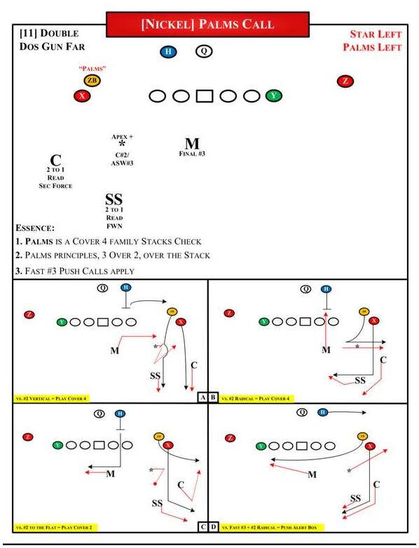

Same family as Cover 4, different trap. Palms lets the corner and safety read #2, then play #1 based on the release.
Palms is split field quarters family coverage. To the QB, the lesson is simple. Two high is only the shell. The truth comes from #2's release and the corner's behavior.
This is the corrected 2x2 teaching path. The core Palms read is #2 to #1. Keep the lesson on the confirmed install pictures.
| #2 Release | Corner | Safety | QB Translation |
|---|---|---|---|
| Vertical past 6 yards | Stays over #1. Plays deep quarter. | Carries #2. Quarters behavior. | Think Cover 4. Do not force seam late. Work leverage and grass. |
| To the flat | Squats on #2. Secondary force. | Overlaps #1 over the top. | Now it behaves like Cover 2. Be careful with smash or outside verticals. |
| Radical release | Reads through #2 to #1. Sorts the exchange. | Reads through #2 to #1. Keeps eyes for the new threat. | Wait for the exchange. Do not predetermine a Cover 4 beater. |
| Stack or tight split | Can stay over stack. Read side. | Works with corner to keep three over two. | Expect traffic rules. Attack space after defenders declare. |
Palms is not a route on air answer. If #2 is flat and the corner squats, your Cover 4 answer can become the bait.
Select the release, then run the play. Same layout as the Cover 4 guide. Cleaner rules, better football.
The answer is not just "throw smash." Palms is built to punish lazy Cover 4 assumptions.
Safety carries #2. Corner has #1. If you have access on the outside, take it. If the safety gets too wide with #2, the inside window can show late.
Corner squats. Safety overlaps #1. This is where the QB gets baited into throwing the outside route late.
The defense sorts the route. Hold your answer until the corner and safety show who owns #1 and who owns the new inside threat.
Palms is a stack check in the install. The defense wants to stay over the stack and avoid getting rubbed. Attack after the traffic clears.
This is the source image for the page. The teaching stays tied to the actual Nickel Palms call.

Actual install image. Shows Palms as a Cover 4 family stacks check, 3 over 2, over the stack, with the bottom examples for #2 vertical, #2 radical, #2 to the flat, and the push alert.
Open full imageMake sure the QB is reading the coverage, not guessing the shell.